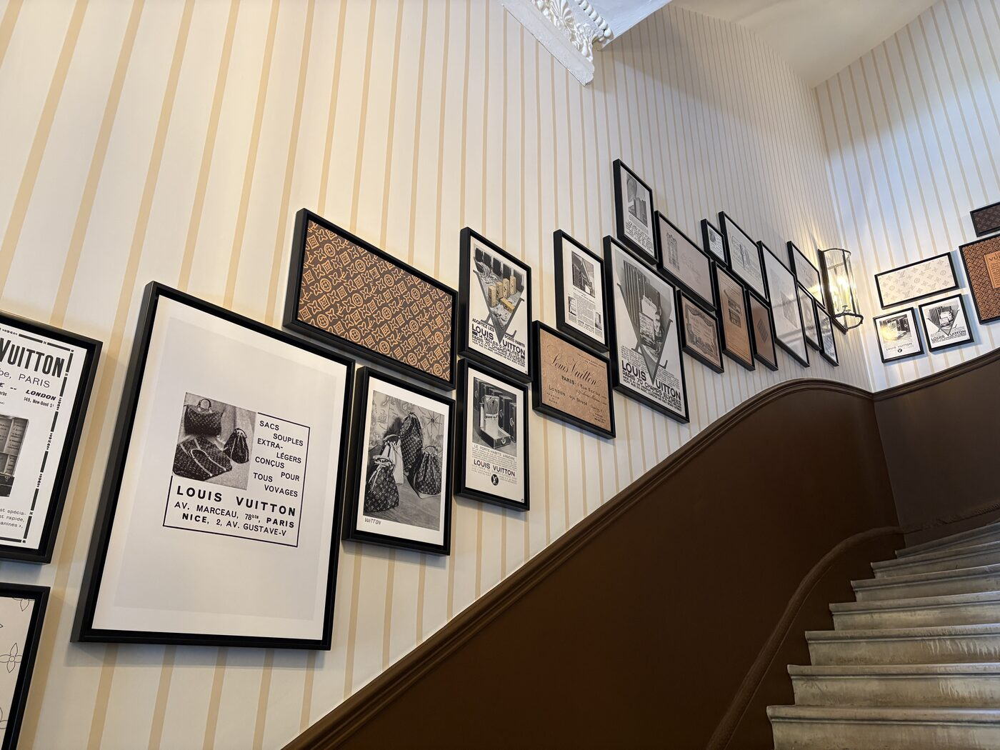

There is a particular kind of London magic that happens when a Georgian townhouse in Mayfair quietly becomes something else entirely. At 28 Berkeley Square — the former Morton’s private members’ club, a building that already knows a thing or two about discretion — Louis Vuitton has opened its doors to the most ambitious retail-as-theatre proposition the capital has seen this season.
The Louis Vuitton Hotel, which opened on 24 April and runs until 21 June 2026, is not a hotel in any conventional sense. There are no rooms to book, no concierge to ring at dawn. What there is, across three storeys and a lower ground floor, is an immersive pop-up experience that blurs the boundaries between retail, hospitality and exhibition with the kind of confidence that only a house with 130 years of monogram history can muster. Each floor is dedicated to an iconic Louis Vuitton bag, and each has been imagined as a distinct environment — part showroom, part stage set, part love letter to the house’s archive.
The occasion is significant. The LV monogram — those interlocking letters and quatrefoil flowers that have become one of the most recognisable patterns in luxury — was first created in 1896 by Georges Vuitton, in tribute to his father Louis. What began as an anti-counterfeiting measure became, over the following century, a shorthand for a particular vision of travel, craftsmanship and aspiration. The London pop-up is part of a year-long global celebration of the motif’s 130th anniversary, and the house has chosen to tell that story not through a museum exhibition or a runway show, but through something more playful: a building you can walk through, drink in, and leave carrying something beautiful.
Ground Floor: the Keepall Lobby
The journey begins with the bag that arguably started it all. The ground floor is dedicated to the 1930 Keepall, the soft-sided travel bag that revolutionised luggage by being light enough to carry and elegant enough to be seen carrying. The space has been conceived as a lobby in the grandest sense — a place of arrival and departure, of trunks stacked and itineraries planned. Travel accessories line the walls with the precision of a bespoke library. A concierge desk offers trunk repair and restoration services, a gesture that speaks to Louis Vuitton’s founding philosophy: that the things you travel with should outlast the journeys themselves. Vintage travel poster postcards are available to take away — a small, charming detail that anchors the experience in the romance of mid-century transit.
First Floor: Café Alma
Upstairs, the mood shifts from departure lounge to art deco café. Café Alma takes its name from the 1992 Alma bag — itself named after the Pont de l’Alma in Paris — and the room has been dressed accordingly: arched doorways, warm brass, the kind of considered geometry that makes you want to sit up straighter. Seasonal menus feature afternoon tea with British pastries whose designs nod to the monogram, each petit four a miniature exercise in branding-as-patisserie. It is the sort of space where you might spend an hour longer than intended, which is, of course, entirely the point. The Alma bag sits at the centre of the room like a quiet host, its structured silhouette a reminder that the best design is always a little bit architectural.
The monogram is not merely a logo — it is a narrative thread, stitched through 130 years of travel, craft and reinvention, connecting a nineteenth-century trunk maker to a twenty-first-century cultural house.
The Splendid Edit
Café Alma, first floor — Photography courtesy of Wallpaper*
Second Floor: four rooms, four obsessions
The second floor is where the experience becomes properly theatrical. Four distinct rooms, each named for a bag, each with its own atmosphere and logic. The Speedy Room is a glamorous guest suite celebrating the bag that became Audrey Hepburn’s daily companion — the space channels old Hollywood with the volume turned to eleven, all mirrored surfaces and cinematic lighting, the kind of room that makes you feel as though you have just checked in to something rather wonderful.
Next door, the Safe Room is gold-drenched in the most literal sense: a space that glows with the warm excess of a vault. Here, the centrepiece is the Speedy P9 by Pharrell Williams, the house’s men’s creative director, whose instinct for spectacle is given full expression. The bag sits in its gilded context like an object in a treasury, which — given its likely resale trajectory — it essentially is.
The Vanity Room pivots to beauty, displaying the house’s expanding range of lipsticks, fragrances and beauty products in an environment that treats cosmetics with the same reverence usually reserved for jewellery. And the Neverfull Gym — perhaps the most charming conceit on the floor — references the iconic tote’s extraordinary capacity. The Neverfull, for the uninitiated, can hold 100 kilograms while weighing just 800 grams, a fact that the room celebrates with the kind of athletic exuberance that makes you want to test the claim yourself.
Lower Ground: Bar Noé
Descend the stairs and the century shifts again. Bar Noé, named after the 1932 Noé bag — originally designed as a five-bottle champagne carrier — occupies the lower ground floor as a prohibition-era champagne bar, all low lighting and velvet banquettes and the faint suggestion of something illicit. The cocktail menu leans into the theme with precision: a chocolate Old Fashioned that nods to Vuitton’s trunk-making heritage (the warmth of leather, the richness of cocoa) and a Bellini 1885 that dates itself to the year the house opened its first London shop on Oxford Street. It is a room designed for lingering, for toasting, for the kind of conversation that only happens after the second drink.
The design details throughout the building deserve their own mention. Leather room tags hang from door handles like luggage labels. Trunk-silhouette furniture — ottomans, side tables, display cases — recurs on every floor, a motif that never quite lets you forget you are inside a travel house. Branded ironwork on the Georgian fireplaces is a particularly deft touch: the monogram integrated into the original architecture as though it had always been there, as though Georges Vuitton himself had once sat in this very room and sketched his father’s initials into the grate.
Retail as theatre
What Louis Vuitton has achieved at Berkeley Square is something more interesting than a shop and more generous than a brand exhibition. It is a proposition about what luxury retail might become when it stops trying to sell you something and starts trying to host you. The pop-up format allows for a freedom that permanent retail cannot — the willingness to dedicate an entire room to a single idea, to let a cocktail bar do the work of a campaign, to treat a bag not as a product but as a character in a story that has been unfolding since 1896.
The 130th anniversary of the monogram is, in one sense, a marketing occasion. But the London execution transcends that framing. By rooting each space in a specific bag and a specific era, the house has created something that functions as cultural programming — a walk through the evolution of luxury itself, from the steam-trunk age to the Pharrell era, with afternoon tea and a chocolate Old Fashioned along the way.
The Louis Vuitton Hotel runs until 21 June. No reservation is required for the ground and second floors; Café Alma and Bar Noé accept walk-ins subject to availability. If you are in London this season, it is worth checking in — even if, strictly speaking, there is nowhere to sleep. Some hotels, after all, are better experienced wide awake.